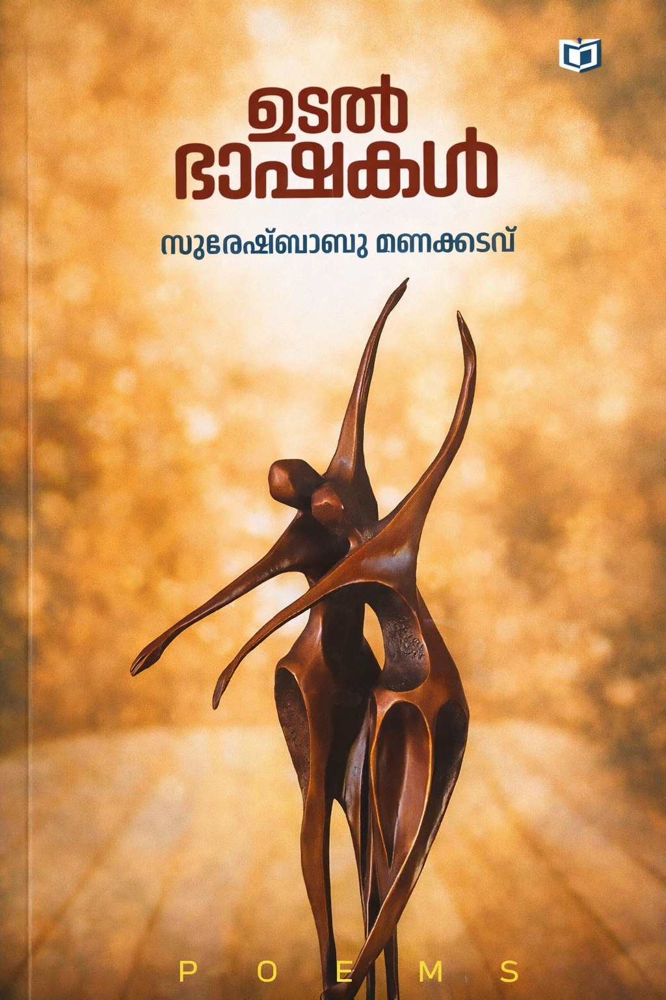

Author: സുരേഷ് ബാബു മണക്കടവ്
Review by: സിന്ധു ഉല്ലാസ്
ഞാൻ പകുതിയായപ്പോഴാണ് നീ തുടങ്ങിയത് നീ തുടങ്ങിയപ്പോൾ ഞാൻ തീർന്നുപോയി
നമ്മുടെ സുരേഷ് ബാബു മണക്കടവിന്റെ 'ഉടൽ ഭാഷകൾ' എന്ന കവിതാ സമാഹാരത്തിലെ ഒരു കുറും കവിതയാണിത്.
ആർക്കും പരിഹാരം കണ്ടെത്താനാവാത്ത ഒരു ജീവിത സത്യം. കുറും കവിതകൾ വളരെ ഇഷ്ടമായതു കൊണ്ടാണ് ഈ വരികൾ ആദ്യം കുറിച്ചത്.
സുരേഷ് ബാബു മണക്കടവിന്റെ ഉടൽ ഭാഷകൾ വായിച്ചു, നമ്മുടെ ചുറ്റിലും കാണുന്നതും അനുഭവിക്കുന്നതുമായ കാഴ്ചകളുടെ സമ്മേളനമാണ് ഈ കവിതകൾ. തന്റെ അനുഭവങ്ങളെ ചെത്തിത്തേച്ച് എടുത്തിരിക്കുന്നു. സമകാലിക സംഭവങ്ങളെയും ജീവിത ക്കാഴ്ചകളെയും കോർത്തിണക്കി കൊണ്ടാണ് പല കവിതകളും രചിച്ചിരിക്കുന്നത്.
കണ്ണ്, പക്ഷിശാസ്ത്രം, സെയിൽസ് ഗേള് എന്നിവ വളരെ രസകരമായി.
അറിയുന്നുണ്ടോ നീ നിന്നെ കരുവാക്കി ഭൂമി ത്തെരുവിൽ ഞാൻ ചെയ്യുന്ന കൃത്യങ്ങൾ
എനിക്കും അങ്ങേക്കും ഇടയിൽ എന്ന കവിതയിലെ വരികൾ ദൈവത്തെ പ്രതി കാട്ടിക്കൂട്ടുന്ന പ്രഹസനങ്ങൾ ഹൃദ്യമായി വരച്ചു.സമകാലിക ലോകത്ത് ശ്രദ്ധേയമായ വരികൾ.
വിശകലനങ്ങൾ എന്ന കവിതയിൽ പലതരത്തിലുള്ള മരണങ്ങളെ വേറിട്ട ശൈലിയിൽ സമീപിക്കുന്നു.
അതുപോലെ ചില ദിനങ്ങളുടെ കുറിപ്പുകളിൽ നമ്മുടെ കരൾ നോവിച്ച സമകാലിക സംഭവങ്ങളെ കോർത്തിണക്കിയിരിക്കുന്നു.
കൊതിയേറെയുണ്ട് എന്ന കവിത ഇത്തിരി നൊമ്പരപ്പെടുത്തി. പ്രളയവും പ്രണയവും ആയുള്ള ഓട്ടപ്പന്തയം, നഷ്ടപ്പെട്ട കാലാളുകളെ പറ്റിയും കുതിരകളെ പറ്റിയും വേവലാതിപ്പെടുന്ന ചെസ്സ്, ഒരു ഉപ്പുഭരണിയായി അച്ഛനെ കണക്കാക്കുന്ന മകൾച്ചിന്തുകൾ...
അങ്ങനെ വാർദ്ധക്യം, പ്രണയം, സാമൂഹിക പ്രശ്നങ്ങൾ, കുടുംബ ബന്ധങ്ങൾ, പ്രകൃതിയിലെ മാറ്റങ്ങൾ, മരണം തുടങ്ങി എല്ലാ വിഷയങ്ങളെയും തന്റേതായ ഭാഷയിൽ തന്റേതായ കാഴ്ചപ്പാടിൽ ആവിഷ്കരിച്ചിരിക്കുകയാണ് കവി. ചുറ്റും കാണുന്ന കാഴ്ചകൾ ഒക്കെ കവിതയാക്കുന്നു. മജ്ജയും മാംസവുമുള്ള ഉടൽ ഭാഷകൾ നല്ലൊരു വായന സമ്മാനിച്ചു.
ആശംസകൾ സ്നേഹപൂർവ്വം.
സിന്ധു ഉല്ലാസ്